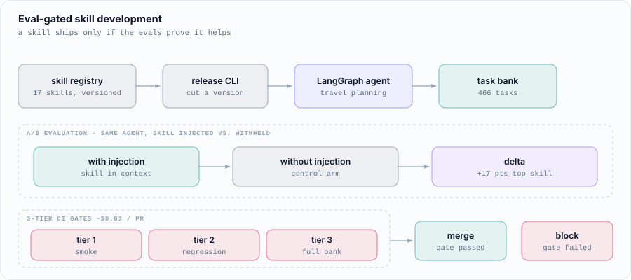
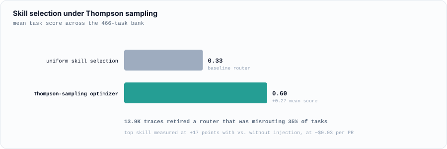

Eval-Gated Skill Development
An agent-skills platform where every skill must prove its value on a 466-task bank before it can ship, with A/B evals wired into CI gates at ~$0.03 per PR.
Most agent "skills" are added on vibes: someone writes a prompt fragment, it looks better on three examples, it ships. This project treats a skill like a code change: it does not merge unless an eval proves it helps.

The platform
A versioned 17-skill registry with a release CLI, and a LangGraph travel-planning agent as the system under test. Versioning matters because a skill's effect is only meaningful relative to a specific agent version and task set. Without it, "this skill helps" is an unfalsifiable claim.
The measurement
Each skill is scored with vs. without injection: the identical agent runs the same tasks from a 466-task bank, differing only in whether the skill is in context. That difference is the skill's contribution, isolated from everything else. The top skill measured at +17 points.
This runs as 3-tier CI gates (a cheap smoke tier, a regression tier, then the full bank), so most pull requests are settled by the cheap tier and the full run is reserved for changes that survive it. The whole gate costs about $0.03 per PR, which is what makes running it on every change realistic rather than aspirational.
Optimization

A Thompson-sampling optimizer over skill selection lifted mean task score from 0.33 to 0.60. Thompson sampling suits this well: skill performance is uncertain and unevenly sampled, and the sampler naturally spends its budget on skills whose value is still ambiguous rather than re-confirming known winners.
Separately, 13.9K collected traces exposed and retired a router that was misrouting 35% of tasks, a failure invisible in aggregate score, and only findable because the traces were there to inspect.